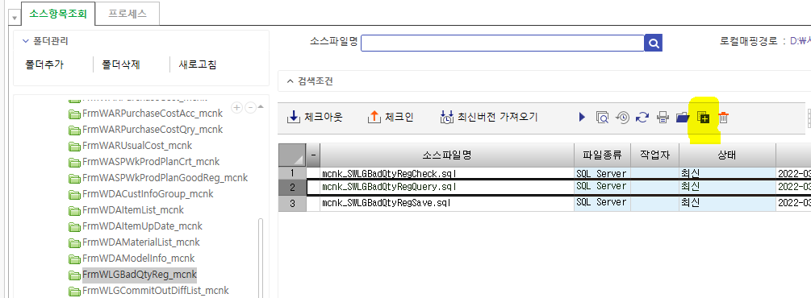
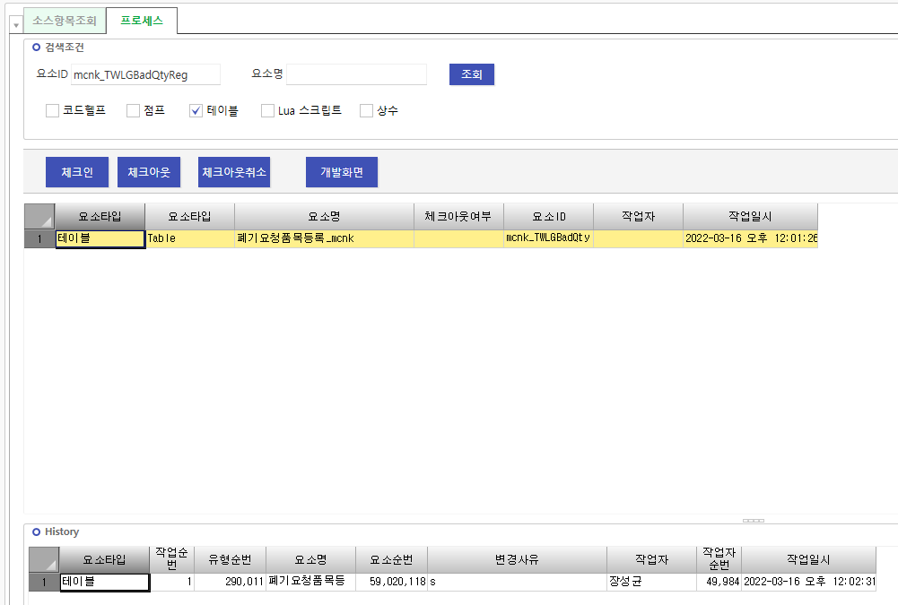
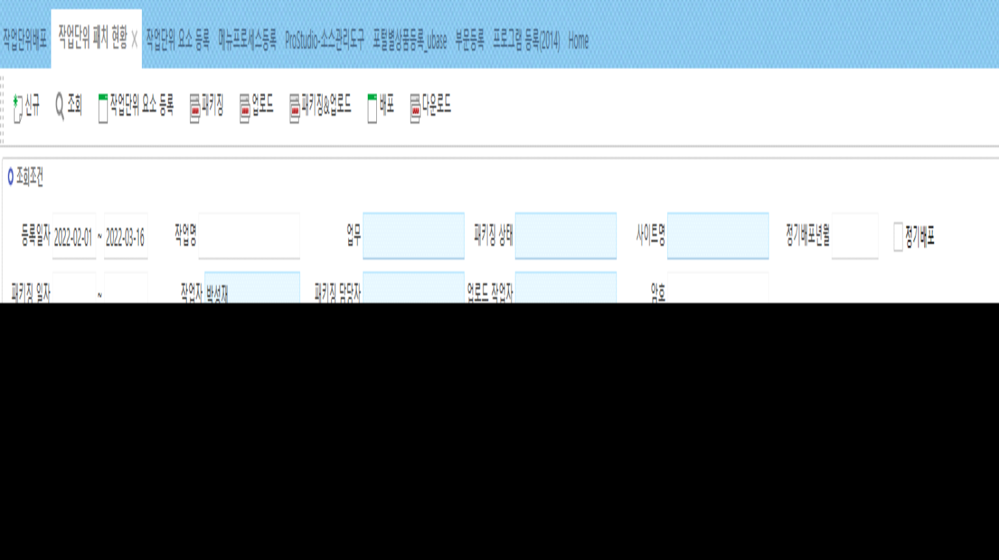
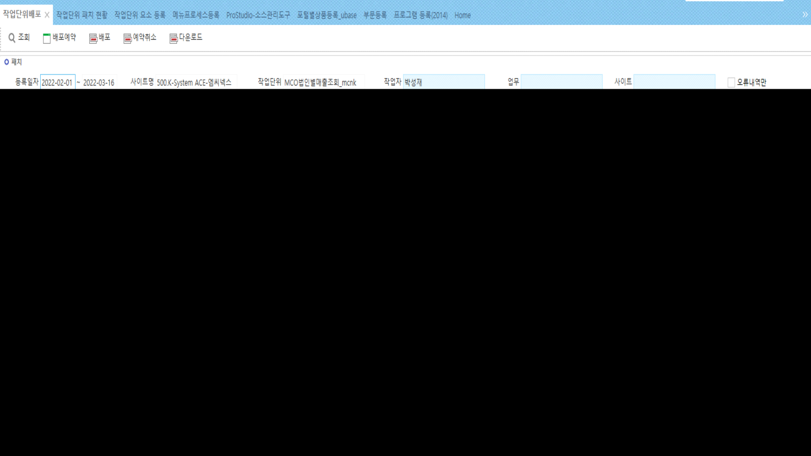

패치
1. ProStudio-소스관리도구
1-1.SP : 소스항목조회
* 신규일 경우
프로그램ID명으로 폴더 생성
pc 폴더에 sp파일 넣기
항목추가 눌러서 추가
체크인

1-2.테이블 : 프로세스
* 신규일 경우
요소ID에 테이블명 검색 (하단은 테이블에만 체크 표시)
체크

2. 작업단위패치
2-1. 작업단위 요소 등록
- 요소 ID : 프로그램 ID => 하위품목조회
- 신규 및 수정한 요소 선택 => ‘\<’ 눌러서 왼쪽으로 이동

- 상단 작성
(차수 증가를 통해 누적 수정 가능)
2-2. 작업단위 패치 현황

조회 – 패키징&업로드 - 배포
2-3. 작업단위배포

선택 체크 => 배포 => 작업단위의 ‘1’ 누르면서 새로고침